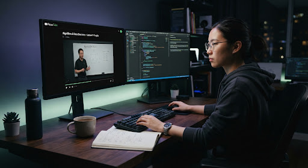

Study smarter.
Recover what you missed.
A distraction-free study player that detects when you look away and uses AI to generate recall quizzes on the exact concepts you missed.
Curated Deep-Work Sessions
Choose a lecture below to launch your distraction-free study room. All attention tracking and focus recovery bookmarks sync seamlessly to your session telemetry.
Or paste a YouTube video or playlist link
Paste any single lecture or curriculum playlist link to launch an ad-free study room with queue controls and continuous Pomodoro timing.
Engineered for sustained attention
FocusTube removes algorithmic clutter and transforms streaming video into a focused study tool.
No recommendations
Eliminate algorithmic sidebars, recommended videos, and comments. FocusTube displays only your selected lecture so you can stay fully focused on learning.
Focus tracking
On-device head and gaze tracking detects when you look away from the lecture. When your attention drifts, FocusTube pauses the video and marks the moment so you don't miss key concepts.
Replay missed moments
Never rewatch an entire hour just to find what you missed. FocusTube bookmarks exact timestamps where you looked away, allowing you to jump straight back with 5 seconds of lead-in context.
AI recall quiz
FocusTube uses AI to generate short recall quizzes focused only on the specific moments where your attention drifted, making sure you master what you missed.

Designed for technical lectures, papers, and complex tutorials.
Standard video platforms are optimized for watch time and advertising. FocusTube is built purely for deep comprehension. Combine active video recall with built-in Pomodoro cycles to protect your mental energy.
All video processing runs locally in your browser. No video frames are ever recorded, stored, or transmitted.